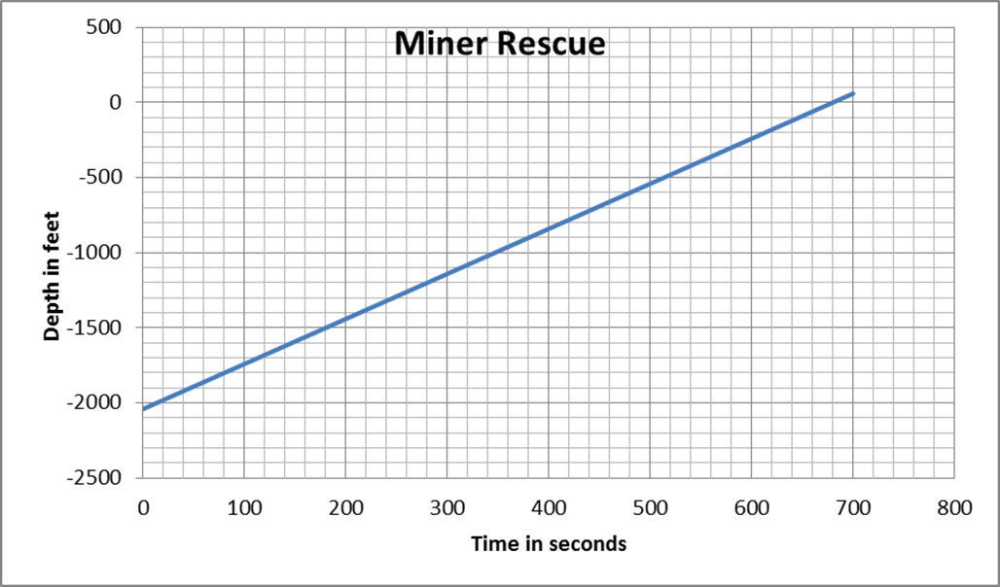

4.5 Writing Equations of Lines
- On August 5, 2010, a gold-and-copper mine collapsed in Chile, trapping 33 miners underground. Rescuers used a drilling rig to reach the miners under the earth’s surface. An escape capsule carried each miner up the shaft at a constant rate as shown in the graph.

- At what underground depth were the miners trapped?
- How long has a miner been ascending in the escape capsule when he reaches a depth of 250 feet?
- How long did it take to bring each miner to the surface?
- At what average rate did the escape capsule carry each miner up the shaft?
- Write an expression for the depth of the miner during his rescue with respect to time ascending.
2040 feet underground
595 seconds
680 seconds
\( \begin{equation} \frac{-300-0}{580-680}=\frac{-300}{-100}= \text{ 3 feet per second} \end{equation} \)
y = 3x - 2040
-
Write an equation for the value of the washing machine based on its age.
y = -100x + 500
- The cost of renting a car for one day and driving it 150 miles or less is $54. However the rental company states that if you drive the car 160 miles, they will charge $56.40 , and if you drive the car 185 miles, the charge is $62.40.
- How much does the rental company charge for each additional mile over 150 miles?
\(\frac{62.40-56.40}{185-160}=\frac{6}{25}=$0.24\)
- Write an equation for the cost of renting the car for one day based on any extra mileage over 150. Use C for cost and m for extra miles.
\(C=0.24m+54\)
- How much would it cost to rent the car for one day and drive an extra 250 miles?
\(C=0.24(250)+54=$114\)
- How much does the rental company charge for each additional mile over 150 miles?
-
- What is the slope of the line?
\(\frac{220-130}{20-2.5}=\frac{90}{17.5} \approx 5.14 \text{ cm per minute}\)
- What is the initial water level?
About 117 cm (exactly \(\frac{820}{7}\) cm)
- Write an equation for the water level. Use W for water level and t for time in minutes.
\(W=\frac{36}{7}t+\frac{820}{7}\) or \(W=5.14t-117\)
- If the water level keeps increasing at this rate, how high will the water be after 2 hours?
\(W = 5.14(120) + 117\), so w = 734 cm
- What is the slope of the line?
- You owe money for a hospital bill. The hospital agreed to a payment plan. After paying regularly for 6 months, you still owe $810. After 24 months, you finally paid off the money you owed.
- How much did you pay per month on the payment plan?
\(810/18 = $45\)
- How much did you initially owe for the hospital bill?
\(24(45) = $1080\)
- Write an equation for the money owed over time.
\(y = -45x + 1080 \) or \(y = 1080 – 45x\)
- How much did you pay per month on the payment plan?